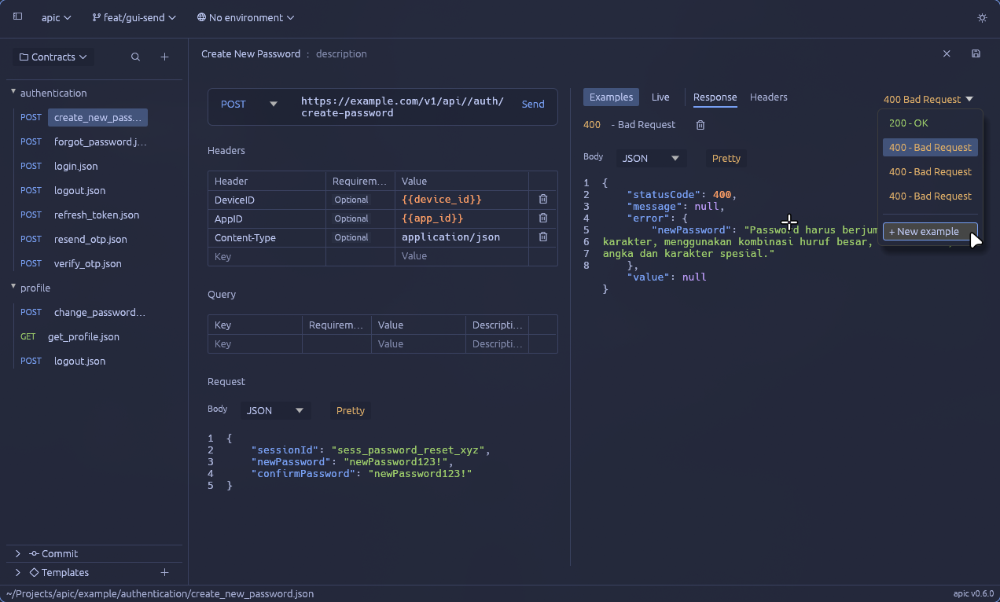
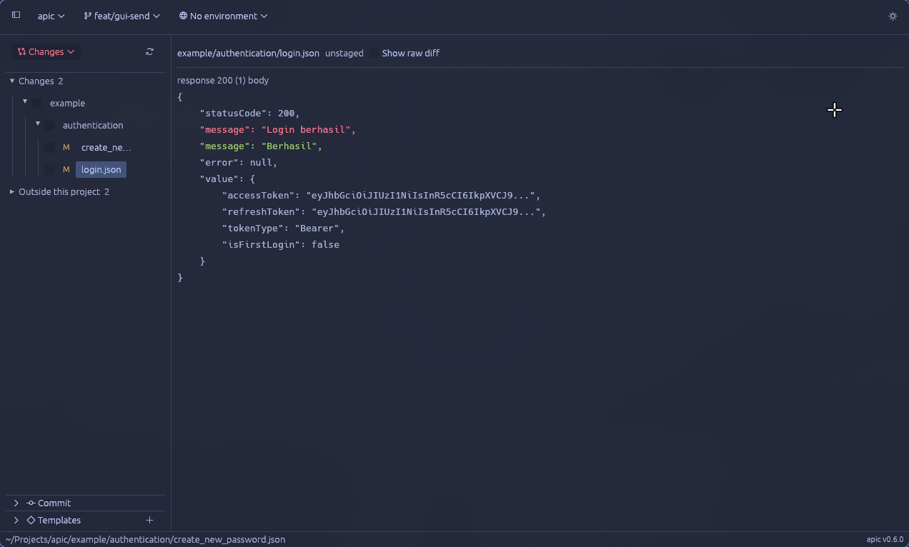

API contracts that live in your repo
One JSON file per endpoint, reviewed in pull requests like code.
Free and open source under GPL-3.0, for Linux, macOS and Windows.
orders/create.json
+4
{
"code": 201,
"description": "Created"
+ },
+ {
+ "code": 409,
+ "description": "Conflict"
}
]
}apic edit -f create --response '409:Conflict'



The desktop app reads the same files
-
Every contract, one tree
Repo folders become groups, each endpoint tagged by method.
-
Tables for headers, JSON for bodies
Edit headers and query params as rows, bodies as JSON or multipart parts.
-
Every response, by status code
Pick an example by its code, or add one for the next error.
If a teammate can clone the repo, they can edit the contract.
- Sharing
- A git push, with no seats to buy.
- History
- Contracts change in the commit that changes the code.
- Review
- Changes arrive as diffs in the pull request.
- Git built in
- The app commits, branches and resolves conflicts.
One file, two readers
Git diffs the JSON. Your terminal prints it as tables.
orders/create.json
{
"name": "create",
"method": "POST",
"url": "https://api.example.com/orders",
"headers": [
{ "name": "Content-Type",
"value": "application/json",
"required": true }
],
"request": {
"sku": "tee-black-m",
"qty": 2
},
"responses": [
{ "code": 201, "description": "Created" },
{ "code": 409, "description": "Conflict" }
]
}apic read -f create
CREATE
POST https://api.example.com/orders
QUERY
(none)
HEADERS
Content-Type application/json
REQUEST
{
"sku": "tee-black-m",
"qty": 2
}
RESPONSE 201, Created
RESPONSE 409, ConflictSee which field changed
Changes are listed field by field. Tick the files and commit.

Send it with your environment
Pick an environment, press Ctrl+Enter, read the live reply.

Install it from your package manager
Two binaries over one core: apic for the terminal, apic-gui for the desktop.
| Where | Command | Copy |
|---|---|---|
| Arch and CachyOS | yay -S apic-bin | |
| Fedora | sudo dnf copr enable rizukirr/apic && sudo dnf install apic-cli | |
| Windows | winget install rizukirr.apic | |
| crates.io | cargo install apic-cli | |
| Any platform | Prebuilt archives with checksums |
| Where | Command | Copy |
|---|---|---|
| Arch and CachyOS | yay -S apic-bin | |
| Fedora | sudo dnf copr enable rizukirr/apic && sudo dnf install apic-gui | |
| Flatpak | flatpak install io.github.rizukirr.apic | |
| Windows | winget install rizukirr.apic-gui | |
| crates.io | cargo install apic-gui |